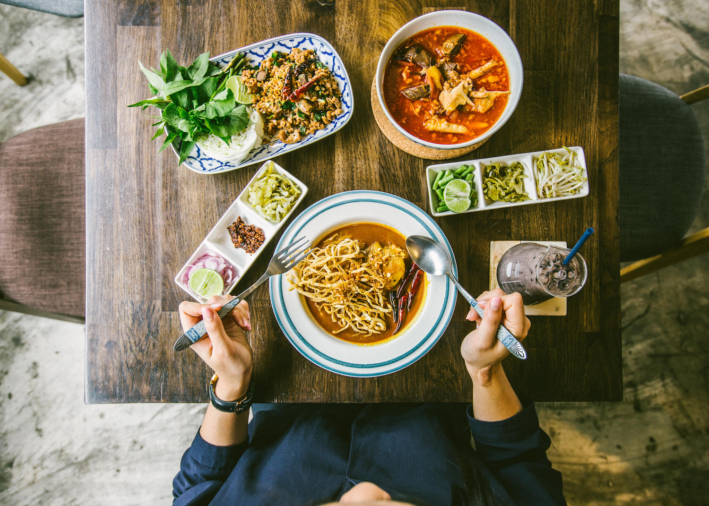

ความเป็นมาของอาหารภาคเหนือ
ภาคเหนือ ภูมิประเทศเป็นภูเชาสลับกับทิวเขาทอดเป็นแนวยาวจากเหนือลงไปใต้ มีที่ราบระหว่างภูเขา อากาศหนาวเย็น ทำให้มีพืชพรรณที่แตกต่างไปจากภาคอื่นๆ เช่น มะเขือส้ม ดอกงิ้ว พริกหนุ่ม มะแขว่น แหลบ มีเขตแดนบางส่วนติดกับประเทศพม่า ทำให้เกิดกา รถนอมอาหารหลายชนิดที่ปัจจุบันเป็นที่แพร่หลาย เช่น แคบหมู หนังฟอง จิ้นส้มหรือแหนม ถั่วเน่า น้ำปู้ (น้ำปู) เป็นต้น อาหารภาคเหนือไม่นิยมใส่น้ำตาล ความหวานจะได้จากส่วนผสมที่นำมาทำอาหาร เช่น ความหวานจากผัก จากปลา ไขมันจะได้จากน้ำมันของสัตว์ สัตว์ที่นิมนำมาประกอบอาหารจะเป็น หมู ไก่ เนื้อ และปลาน้ำจืด การรับประทานอาหารของคนภาคเหนือ จะใช้โต๊ะข้าวที่เรียกว่าขันโตก แทนโต๊ะอาหาร จะทำด้วยไม้รูปทรงกลมมีขาสูงพอที่จะนั่งร่วมวง และหยิบอาหารได้สะดวก ในปัจจุบันกลายเป็นการจัดเลี้ยงที่นิยมเรียกว่า งานเลี้ยงขันโตกดินเนอร์ ซึ่งจะมีรายการอาหารที่จัดดังนี้ ข้าวเหนียวเป็นอาหารหลัก แกงฮังเล ลาบคั่ว (ไม่นิยมรสเปรี้ยว ปรุงรสเค็มนำ นำไปผัดกับน้ำมันให้สุก) ไส้อั่ว แคบหมู จิ้นทอด (หมูทอด) น้ำพริกหนุ่มหรือน้ำพริกอ่อง ผักสด ผักต้ม ร้านอาหารเหนือเป็นร้านอาหารที่มีต้นกำเนิดมาจากวัฒนธรรมการกินของชาวเหนือในประเทศไทย โดยเฉพาะในจังหวัดเชียงใหม่ เชียงราย และจังหวัดอื่น ๆ